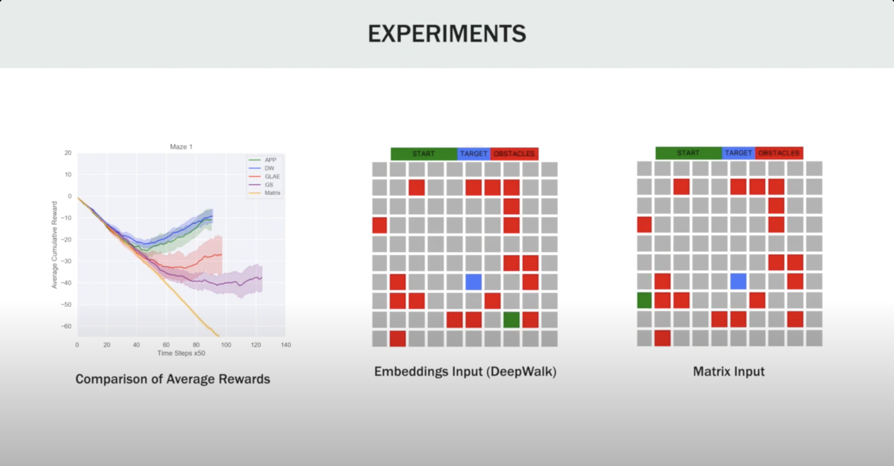

|
Vikram Waradpande
I second year Computer Science student at Columbia University pursuing Computer Science with a speciliazation in Machine Learning. I am broadly interested in Reinforcement Learning, Representation Learning and Parallel/Distributed Computing
I completed my Bachelor's from BITS, Pilani BITS Pilani in Computer Science and Mathematics. After completing my undergrad, I spent two incredible years as a Software Engineer (Associate) at Goldman Sachs in the Bengaluru office in India. I was a part of the Macro Trading desk.
Email /
LinkedIn /
Resume /
Google Scholar /
Github
|
|
Research and Talks
Here's a glimpse of my activities.
|
|
|
PyCon Italia, Florence 2023
Talk on Parallel Programming using MPI in Python,
Video
Recently I spoke at PyCon (world's largest Python conference) Italia chapter held in Florence, Italy from 25th to 28th May, 2023. My talk intrduced beginners to the world of parallel and distributed programming using MPI. I touched upon why and when to and when not to use parallel programming.
|
|
|
PyCon Italia, Florence 2023
Talk on Parallel Programming using MPI in Python,
Video
I spoke in PyCon Italia on introduction to Differential Privacy and how to use Differential Privacy in Python using the PyDP module. We also touched upon the common usecases of DP, and how Machine Learning algorithms can benefit from using DP principles.
|
|

|
Graph-based State Representation for Deep Reinforcement Learning
Vikram Waradpande, Daniel Kudenko, Megha Khosla
MLG-KDD, 2020
Video /
arXiv
Graph-based State Representation for Deep Reinforcement Learning. Deep Reinforcement Learning has gained popularity in recent years. While these approaches have been successful, they still suffer from high sample complexity. Neural networks are able to extract features from the input space, but in this work, we explore how better input representations to the network can improve its performance. The underlying MDP of an RL task represents a graph. This enables us to incorporate topological information in the input representations. We use and compare several node representation learning algorithms for a grid-world navigation task. We find out that all embedding methods outperform the simpler matrix input to the network. We also perform a systematic comparison and conclude that the first neural approach for learning node representations outperforms most of the other methods. Our results suggest that more research may be needed in developing deep learning models for graphs that can improve over the (relatively simple) DeepWalk baseline.
|
Projects
Some projects I've been working on.
|
|
|
SumItUp: LLM based AskMeAnything for Market Research
Using GPT to act as a Ask Me Anything engine to learn information from interview notes, meeting minutes, and research notes.,
This summer, I spent 10 incredible weeks at Aleth , a small startup based in Berkeley. As with any startup, a very important part of business development is performing market research. We had tens of interviews every single day and being a small team of 7 people, there wasn't enough time to go through the interviews and create refined notes about the insights that we draw from the interviews. This prompted me to create SumItUp, an internal tool which automatically sums up the interview notes, and the internal documents containing our research into an AMA format. Anyone can ask any question to the AMA agent about a topic that needs to be understood from the interviews and the agent uses GPT to draw insights from the interviews to answer your question.
|
|
|
PolInc: Political Inclination in Social Networks
Using Haskell to Simulate a social network influences Politics,
Report
In large social networks, indicators of centrality can be used to assign rankings to people within a graph corresponding to their network position. Top influencers preaching for a particular political party directly influence their followers/first-level connections. Each person can directly preach their inclination to their contacts as well. Thus, we see a large-scale diffusion of information from each influencer to all the other nodes at a network level. We can score each person in the network based on the information they receive on each political party and use it to determine the overall sentiment of the population. In this project, we attempt to simulate the flow of influence from top influencers in a social network to assign net scores to each member of the population which we plan to use to determine the overall political inclination of the population.
|
Miscellaneous
Misc Fun Stuff!
|
|
{kind=link}